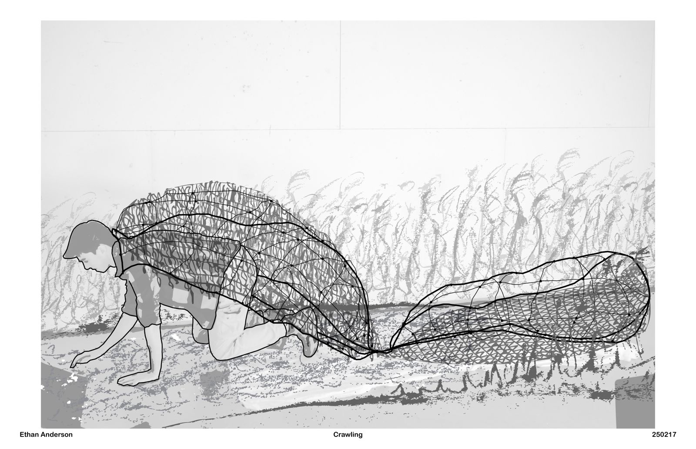
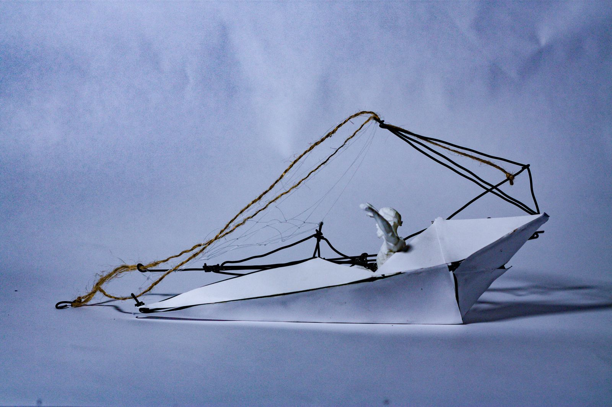
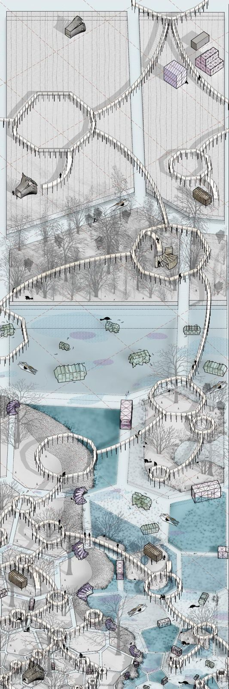

ARCH 172 · University of Illinois Urbana-Champaign · 2025
Beaver's Burden
Gizmo architecture that works alongside beavers to rewild the Kankakee Marsh: something you wear, a boat, and a field of shipping-container-sized interventions.
The story
The studio spent the semester on one brief: rewild the Kankakee Marsh, and design gizmos that help do it. This gizmo had to be wearable.
Beavers are a keystone species, especially for wetland habitat. They were once central to Midwestern river ecosystems, holding water on the land, making habitat and supporting biodiversity, so I followed them all semester. The wearable lets a person embody the beaver's experience.
The Beaver's Burden is a wearable apparatus that gathers dam-building materials. It combines two lemniscates into two volumes, one for the person and one for what they collect. The Catama-raft is a rowing-powered vessel whose netted hold and waterwheel mechanism clear invasive plants from riverbanks, making room for native species.
At the scale of infrastructure, a field of shipping-container-sized interventions manages water flow, supports field research and creates habitat. Together they bridge human engineering and animal architecture.
What I did
- Designed and modeled each device and the landscape-scale system
- Built wire models, drew, collaged and animated the mechanism as a GIF
- Figure drawings of classmates, used to study how a body carries the burden
Process
- The wearable was photographed in five positions: standing, crouching, crawling and two swimming poses (boards dated February 17, 2025)
- Figure drawing (January 2025) → shipping crate gizmos: volumes named Solar, Blow, Fold and Orbit (April 2025) → Beaver's Burden and Catama-raft → landscape axonometric (May 2025)
- Why lemniscates: I love when complexity comes out of simplicity. The lemniscate is a simple form, but it could carry this design: it gave the two volumes the brief needed, one for the human body and one for the collected materials.
- Material: the studio required modeling in rebar tie wire, and a lemniscate was a form I could bend easily from it.
- Built at full scale and worn: I made the wearable full size and filmed myself acting out its use (standing, crouching, crawling, swimming). The film became a stop-motion loop with my figure traced in outline.
Outcome
- Final title-blocked boards, a 3 × 6 ft landscape axonometric, a video and a mechanism GIF
Reflection
I love when complexity comes out of simplicity. One simple curve, doubled, could hold a body and a burden, and I could bend it by hand from tie wire. Wearing it was the point: to feel, for a moment, what a beaver's work asks of a body.
Drawings


